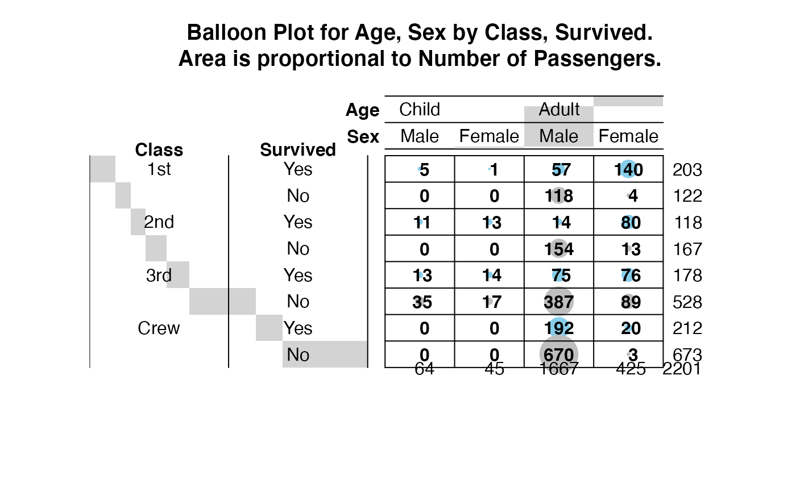

Plot a graphical matrix where each cell contains a dot whose size reflects the relative magnitude of the corresponding component.
balloonplot.RdPlot a graphical matrix where each cell contains a dot whose size reflects the relative magnitude of the corresponding component.
balloonplot(x, ...) # S3 method for table balloonplot(x, xlab, ylab, zlab, show.zeros=FALSE,show.margins=TRUE,...) # S3 method for default balloonplot(x,y,z, xlab, ylab, zlab=deparse(substitute(z)), dotsize=2/max(strwidth(19),strheight(19)), dotchar=19, dotcolor="skyblue", text.size=1, text.color=par("fg"), main, label=TRUE, label.digits=2, label.size=1, label.color=par("fg"), scale.method=c("volume","diameter"), scale.range=c("absolute","relative"), colsrt=par("srt"), rowsrt=par("srt"), colmar=1, rowmar=2, show.zeros=FALSE, show.margins=TRUE, cum.margins=TRUE, sorted=TRUE, label.lines=TRUE, fun=function(x)sum(x,na.rm=T), hide.duplicates=TRUE, ... )
Arguments
| x | A table object, or either a vector or a list of several categorical vectors containing grouping variables for the first (x) margin of the plotted matrix. |
|---|---|
| y | Vector or list of vectors for grouping variables for the second (y) dimension of the plotted matrix. |
| z | Vector of values for the size of the dots in the plotted matrix. |
| xlab | Text label for the x dimension. This will be displayed on the x axis and in the plot title. |
| ylab | Text label for the y dimension. This will be displayed on the y axis and in the plot title. |
| zlab | Text label for the dot size. This will be included in the plot title. |
| dotsize | Maximum dot size. You may need to adjust this value for different plot devices and layouts. |
| dotchar | Plotting symbol or character used for dots. See the help page for the points function for symbol codes. |
| dotcolor | Scalar or vector specifying the color(s) of the dots in the plot. |
| text.size, text.color | Character size and color for row and column headers |
| main | Plot title text. |
| label | Boolean flag indicating whether the actual value of the elements should be shown on the plot. |
| label.digits | Number of digits used in formatting value labels. |
| label.size, label.color | Character size and color for value labels. |
| scale.method | Method of scaling the sizes of the dot, either "volume" or "diameter". See below. |
| scale.range | Method for scaling original data to compute
circle diameter. |
| rowsrt, colsrt | Angle of rotation for row and column labels. |
| rowmar, colmar | Space allocated for row and column labels. Each unit is the width/height of one cell in the table. |
| show.zeros | boolean. If |
| show.margins | boolean. If |
| cum.margins | boolean. If |
| sorted | boolean. If |
| label.lines | boolean. If |
| hide.duplicates | boolean. If |
| fun | function to be used to combine data elements with the same
levels of the grouping variables |
| ... | Additional arguments passed to |
Details
This function plots a visual matrix. In each x,y cell a
dot is plotted which reflects the relative size of the corresponding
value of z. When scale.method="volume" the volume of
the dot is proportional to the relative size of z. When
scale.method="diameter", the diameter of the dot is proportional to
the the relative size of z. The "volume" method is default
because the "diameter" method visually exaggerates differences.
Value
Nothing of interest.
Note
z is expected to be non-negative. The function will still
operate correctly if there are negative values of z, but the
corresponding dots will have 0 size and a warning will be generated.
References
Function inspired by question posed on R-help by Ramon Alonso-Allende allende@cnb.uam.es.
See also
Examples
# \testonly{ set.seed(12425421) # } # Create an Example Data Frame Containing Car x Color data carnames <- c("bmw","renault","mercedes","seat") carcolors <- c("red","white","silver","green") datavals <- round(rnorm(16, mean=100, sd=60),1) data <- data.frame(Car=rep(carnames,4), Color=rep(carcolors, c(4,4,4,4) ), Value=datavals ) # show the data data#> Car Color Value #> 1 bmw red 138.9 #> 2 renault red 150.7 #> 3 mercedes red 111.5 #> 4 seat red 73.8 #> 5 bmw white 24.7 #> 6 renault white 245.9 #> 7 mercedes white 85.7 #> 8 seat white 18.2 #> 9 bmw silver -65.7 #> 10 renault silver -16.6 #> 11 mercedes silver 180.6 #> 12 seat silver 76.1 #> 13 bmw green 121.4 #> 14 renault green 171.2 #> 15 mercedes green 183.1 #> 16 seat green 95.3# generate balloon plot with default scaling balloonplot( data$Car, data$Color, data$Value)# show margin label rotation & space expansion, using some long labels levels(data$Car) <- c("BMW: High End, German","Renault: Medium End, French", "Mercedes: High End, German", "Seat: Imaginary, Unknown Producer") # generate balloon plot with default scaling balloonplot( data$Car, data$Color, data$Value, colmar=3, colsrt=90)# Create an example using table xnames <- sample( letters[1:3], 50, replace=2) ynames <- sample( 1:5, 50, replace=2) tab <- table(xnames, ynames) balloonplot(tab)# Example of multiple classification variabls using the Titanic data library(datasets) data(Titanic) dframe <- as.data.frame(Titanic) # convert to 1 entry per row format attach(dframe) balloonplot(x=Class, y=list(Survived, Age, Sex), z=Freq, sort=TRUE)# colorize: surviors lightblue, non-survivors: grey Colors <- Titanic Colors[,,,"Yes"] <- "skyblue" Colors[,,,"No"] <- "grey" colors <- as.character(as.data.frame(Colors)$Freq) balloonplot(x=list(Age,Sex), y=list(Class=Class, Survived=reorder.factor(Survived,new.order=c(2,1)) ), z=Freq, zlab="Number of Passengers", sort=TRUE, dotcol = colors, show.zeros=TRUE, show.margins=TRUE)